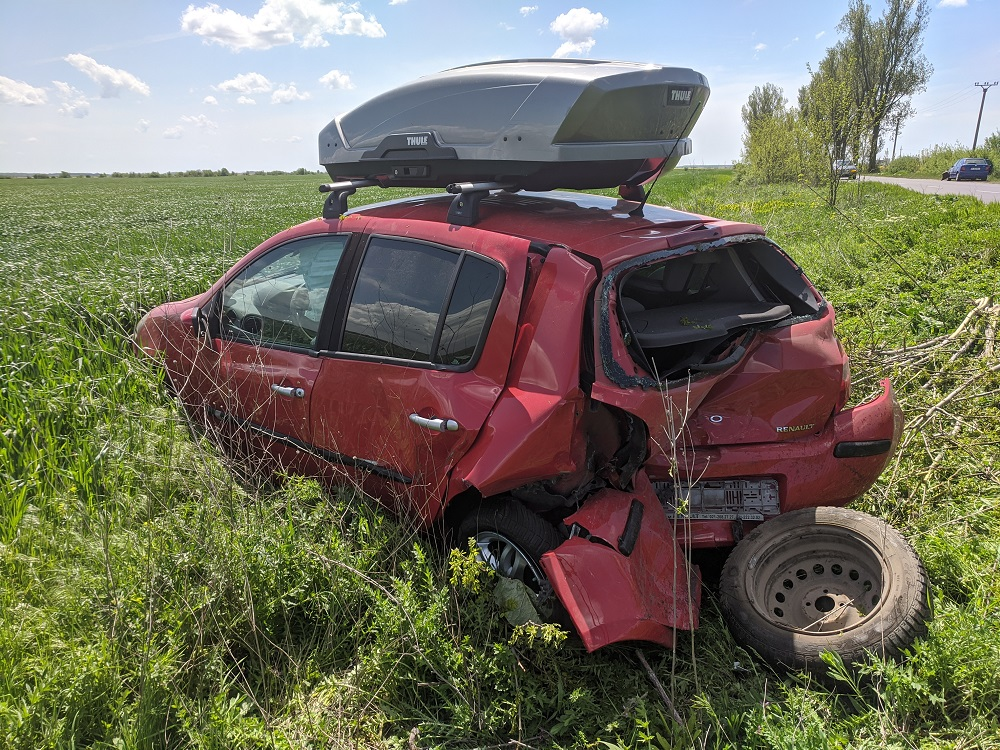

Această „pagină” din jurnal este, în fapt, o defulare (scrisă cu un mare nod în gât, la oră târzie din noaptea de după incident, stăpânit fiind de o încordare constantă combinată cu furie, regret și recunoștință). Trăiri probabil normale în urma unui șoc care nu a avut un final realmente tragic. Nu am pe unde vărs cuvintele astea, așa că le voi lăsa pe-aici, pentru posteritate. Poate experiența în cauză va fi utilă și altora, cumva.
Nu sunt șofer. N-am carnet, pentru că n-am avut mașină nici după 18 ani, iar prin natura muncii n-am avut reală nevoie de deplasări cu automobilul. Însă stau de mulți ani pe locul din dreapta șoferului, martor al multor teribilisme și inconștiențe din partea paticipanților la trafic: depășiri „la limită”, forțări de coloană (auto), agresivitate, etc., le știți prea bine. Și întotdeauna am perceput relaxat relatările (sau observarea de pe margine a) altor accidente, cu un pic de scandalizare generalizată și cumva detașată. Asta până când am trăit „la prima mână” senzația de a fi lovit violent din spate, având soția și proprii copii în mașină. Timpul se dilată exact ca-n documentarele acelea un pic telenovelistice, în care oamenii afirmă că au peceput durata impactului din cadrul unui accident ca fiind mult mai mare decât în realitate..
Mergem cu toții liniștiți pe un oarecare drum județean dintre Stefănești și Dascălu, cu nici 2 kilometri înainte de-a coti la dreapta în căutarea unei după-amieze liniștite pe marginea unei bălți. Viteză pe la 70 kmh, drum drept, soare și vânt. Mâncarea-i la pachet, copiii sunt în spate (amândoi), fiecare-n scaunul lui. Așa știi că e bine să faci, să fii precaut în ciuda disconfortului lor ocazional care necesită pauze-n plus. Muzică drăguță-n surdină și gânduri la planuri de concediu post-pandemic. Soția-i șoferul, căci are experiență îndelungată, e om precaut, calculat și atent (și da, sunt genul ăla de tip „care se lasă condus de femeie”, cum s-ar spune). În deja 10 ani și ceva, am adunat multe și neprețuite amintiri cu mașinuța în care ne aflăm, proaspăt revopsită și cu revizia la zi. Este o parte componentă a multor trăiri și ne-a purtat cu brio prin multe locuri. Îi spunem „Buburuza”, căci e un Renault Clio 3 roșu din 2006.
În depărtare se vede un cățel pe șosea. Pedala accelerației este lăsată-n pace și, treptat, pe parcursul multor secunde, viteza scade spre aproximativ 40 kmh, deoarece nu este dezirabil să izbești un animal. Chit că te lasă rece animalele, impactul îți poate destabiliza mașina, iar drumul este cu o singură bandă și traficul din sens opus destul de consistent. În retrovizoarea din dreapta văd de mult timp aceleași 2-3 mașini, la o distanță decentă. -„Săracul, s-a pierdut sau e abandonat..”, zic eu din dreapta -„Da, e și speriat”, spune Nico.
În spate sunt aceleași mașini ca acum 3 secunde. De pe contrasens se apropie o nouă coloană de autovehicule, ca de obicei. Trecem pe lângă cățel cu succes și sunt pe cale să rostesc „E hai că facem dreapta la următoarea intersecție și ajungem”, dar gândul mi-e întrerupt: „- Uite-l p-ăsta cum se bagă….”, spune Nico. Arunc un ochi în retrovizoarea din stânga și văd, ca un fulger, o mașină apărută de nicăieri. Simt cum Nico mișcă ușor din volan spre dreapta, mai spre marginea drumului, anticipând manevra respectivului de-a ne depăși „la ștergere”. Apoi o bubuitură puternică-n spate, care m-a dus cu gândul la o explozie de cauciuc la respectiva mașină, doar că al meu cap tocmai s-a lovit violent de tetieră. Mai apar două bubuituri dinspre stânga, urmate de un soi de fum. „Ce-o fi fumul ăla?”, zic eu în sinea mea. Apoi văd că nu mai mergem pe asfalt, ci brusc cotim spre câmp. Mă simt tras în centură și un pic aruncat spre stânga. Nu se mai vede cerul, ci doar pământ și iarbă. Îmi dau seama că partea din spate a mașinii s-a ridicat un pic în aer. Filip (băiatul cel mare) începe să urle speriat în spatele meu, căci acolo este scaunul lui. Pe Radu nu-l aud. Cu coada ochiului o percep pe Nico cum e aruncată un pic spre stânga, dar are mâinile pe volan. Simt și eu că mă duc mai mult spre stânga. Încă nu văd cerul, ceea ce-mi dă rapid de înțeles că probabil ne vom răsturna.
Urletele sunt mai intense, capul mă doare și centura mă strânge de piept. Totul încă huruie, miroase a fum și-a iarbă cosită. Văd câmpul, dar tot nu ne oprim. Îmi pare că mai trec 3-4 secunde până când mașina nu se mai mișcă. Filip urlă, deci e viu. Radu (cel mic, de 7 luni) nu se aude. Nu-mi pot dezlipi capul de pe tetieră, dar reușesc să mă uit spre stânga. Suntem pe câmp, Nico mișcă și deja se pregătește să deschidă ușa. Mă uit în spate și rapid observ airbag-urile coborâte pe toată latura stângă. Radu deschide ochii.
Deschid ușa, ies din mașină și mă uit spre șosea. Suntem destul de mult în afara ei și nu ne-am răsturnat, iar în mijlocul drumului zace acel Logan pe care abia am apucat să-l observ înainte de „furtună”. Un tataie se dă jos din el și abia se ține pe picioare. Îl ignor un pic și, fără să gândesc, aplic o rutină rigidă: „1) ACUM deschizi ușa în spate, 2) Desfaci centurile și îl scoți pe Filip din scaun, 3) îl depărtezi de mașină”.. Nico strigă scurt: „Nu pot să deschid la Radu!”. „OK, ia-l pe Filip și mergeți pe partea ailaltă a drumului”. Apare un alt domn tânăr care încearcă să mă ajute cât mai repede. Nico îl ia pe Filip iar eu apuc să mă uit iar spre drum. Radu plânge speriat, dar măcar îl aud. E tot în scaunul lui, cu centurile legate.
Înainte să mă arunc în mașină, animalul onest din mine urlă spre drum: „’Tu-ți gura mă-tii de nenorocit! Am copii în mașină, bă!”. Intru-n mașină și văd că ceva nu e bine. Scaunul lui Radu este înfipt în cel al șoferului. Încerc să mut scaunul șoferului, dar reușesc foarte puțin: mecanismul este stricat. Din fericire, el este mic. Reușesc să-l scot, cu greu, din centuri și ulterior din mașină, dar prin partea din față. Îl iau și mă duc pe partea celalată a drumului, unde Nico reușește să ignore propria-i stare de șoc pentru a atenua șocul lui Filip. Sunt mulți oameni ieșiți din mașini, soția celui care a venit să mă ajute deja a sunat la 112. Respirăm, iar brusc ăsta a devenit cel mai important lucru de pe lume.
Sunt convins că acel om în vârstă este atât beat, cât și idiot și senil. În primul rând, această manevră clasică pe drumurile României, de-a forța depășirile. Apoi, vârsta poate prea înaintată pentru ca acest individ să mai dețină un carnet de conducere, grație slăbirii accentuate și naturale a reflexelor și acuității vizuale. Văzând că Nico, Filip și Radu sunt în aparentă siguranță, mă lupt cu o lăuntrică dorință de-a mă duce la cel ce ne-a făcut asta și să-l bat cu fața de asfalt până îl las lat, dar din fericire încă-mi funcționează lobul prefrontal și realizez că o asemenea acțiune nu ar rezolva nimic, ci din contră: m-ar băga în închisoare iar copiii ar rămâne cu amintirea unui tată care a măcelărit un moș în mijlocul drumului.
Mă duc spre mașină pentru a aduce apă și rucsacul cu hainele copiiilor. O văd în ce stare este și parcă nu-mi vine a crede. Știu că sună stupid privind din exterior, dar simt cum ceva drag mie a fost distrus, luat cu forța sau chiar…omorât. Furia mă sufocă din nou, dar îmi repet că am altceva de făcut.
În cele din urmă, apare primul echipaj de poliție. Apoi mașina de pompieri. Filip încă urlă speriat în stare de șoc, fiind aproape imposibil de calmat. Îi recuperez trenul de jucărie pe care-l ținea-n mâini la momentul impactului, iar asta ajută. Nico îl bombardează cu încurajări și cuvinte de calmare (nu știu cum reușește). A urmat tot protocolul Poliție-SMURD, cu echilotest la ambii șoferi. Spre surprinderea mea, moșul avea și el alcoolemie 0.0. În dreapta lui o avea pe soție, la fel de în vârstă. Au scos-o cu utilaj de descarcerare, dar era OK.
Doi oameni extrem de binevoitori (soții Coman, numele dânsului fiind Alexandru - din păcate, în acel haos nu am fost capabil să înregistrez numele doamnei) ne ajută cu mici detalii pentru calmarea situației, se oferă să ne care bagajele acasă și chiar să ne însoțească la spital. Devin și ei martori (au fost mai mulți) și le suntem recunoscători pentru bunăvoință. Nico-l sună pe Marian, fratele ei. Tocmai s-a ]ntors în București și ajunge foarte repede la locul faptei, să ne ajute. Și cât ne-a ajutat, n-am cuvinte suficiente pentru a-mi exprima recunoștința!
Protocolul a cerut ca noi, părinții, să mergem la spital cu copiii, pentru verificări în urma impactului. Deși păreau relativ OK, Filip avea o contuzie la piciorul stâng și se ferea să pășească cu el, acuzând că-l „doare tare”. Radu avea o julitură pe pometul stâng. Astfel, am plecat spre Grigore Alexandrescu iar Marian a rămas și s-a ocupat de ducerea mașinii la un service (cunoaște pe cineva cu o platformă de tractare), preluarea bagajelor din mașină și multe alte detalii esențiale.
Mai departe, am rămas impresionat de profesionalismul celor de la spital. Oameni tineri, vizibil obosiți, dar abili și atenți, cu totul în afara tiparului medicului pe care-l alergi cu plicul pe sală pentru a te băga în seamă. De fapt, „plicurile” au fost total absente în povestea asta. Nici nu a existat timp pentru ele, dar nici n-au fost insinuate ori pretinse. Sub nicio formă, ci chiar din contră. După o serie de investigații, am fost trimiși acasă, cu câteva mențiuni, precauții și un eventual tratament pentru Filip (care s-a ales cu o contuzie tibială și ceva forțare a gleznei stângi).
Am luat tramvaiul 1 către casă și nu cred că am fost vreodată mai recunoscător că intru într-o scară de bloc. Iar apartamentul din care plecasem cu câteva ore-n urmă arăta și mirosea altfel. Era mai luminos, mai primitor, mai liniștit. Eram Acasă. Toți patru (mă rog, 5, căci ne-a întâmpinat și Tomiță).
Au urmat și alte lucruri până la finalul acestei zile. Iar acum, cu ceva dureri musculare și o acută insomnie, mă simt dezamăgit. Da, cred că e cuvântul potrivit. De ce? Pentru că trăiesc și trăim într-o societate înrăită. Lumea lui „Mai repede! Mai mult! Mai mare!”, lumea celor grăbiți și inconștienți care urlă „ba pe-a mă-tii!” prin fiecare gest ostil din trafic. Căci da, atunci când depășești coloana, forțezi manevre, mergi cu 110 Kmh în localitate sau intimidezi în trafic, spui ceva. Spui „Ba pe-a mă-tii, căci io-s mai Bun/Rapid/Șmecher/Deștept/Important/Capabil” iar toți cei din jur sunt niște obstacole în calea măreției tale.
Ar trebui octogenarii să conducă? S-a dovedit că șoferul mașinii care ne-a lovit avea peste 80 de ani și nici nu prea mai vedea. Ce reflexe are un astfel de om? De ce are încă un permis de conducere? Cât de cretin a fost încât să se comporte la fel de teribilist precum „băjeții” care „face manevre pă trafic, ca la Need For Speed”? Nu știu ce să mai spun. Cică există ceva lege cum că dacă ai peste nu știu ce vârstă, faci control anual ca să primești OK-ul de-a conduce. În caz că e în vigoare acea prevedere, sunt convins că domnul are toate bifele posibile de la vreun cabinet oarecare ce face bani dând avize-n alb. Căci, ce se poate întâmpla?
Nu știm încă soarta definitivă a mașinii, dar clar nu arată încurajator. Nu putem să nu ne simțim deposedați pe nedrept de ceva (ca să nu zic „cineva”) drag nouă, însă am primit un „duș” foarte rece. Probabil că mâine, când voi putea mânca ceva, gustul va fi cu totul altfel. Undeva mi-e un pic teamă să adorm acum, căci sunt convins de retrăirea momentului sau a câtorva scenarii mult mai sumbre. Un mic detaliu: dacă Radu era mai mare (adică mai înalt) și picioarele ori gleznele ar fi atârnat nițel în afara scaunului, cum este și normal, în urma impactului ambele picioare i-ar fi fost fracturate. Grație deformării mașinii, partea din stânga a banchetei din spate s-a apropiat de scaunul șoferului, „înfigând” scaunul copilului în acesta.
Da, știu, haosul universului, probabilități, „se întâmplă”, o iau prea-n tragic. Exact asta spuneam și eu când citeam lucruri de acest gen. Până azi, când chiar am trăit-o.
Toți medicii ne-au spus: „Fiți fericiți că ați avut copiii în scaune, căci nu vreți să știți ce se îmtâmplă în genul ăsta de accident”. Mi s-au povestit destule, știu prea bine. Iar în trecut, eu însumi am făcut imprudența de a-l ține pe Filip în picioare, pe bancheta din spate, în afara scaunului și-n vreme ce mașina era în mișcare, pentru că se plictisea iar noi trebuia să trecem de niște serpentine prin Grecia (și nu doar acolo am făcut astfel). Eram convins că îl țin bine, nu are se să se întâmple, mai ales că Nico este un șofer prudent. Însă forțele generate de un impact sunt cu mult peste controlul unei adunături de oase, carne și piele. În ciuda prudenței tale, cel ce te poate izbi mâine nu e în controlul tău.
Știu cum e cu plânsetele copilului la drum lung, cu ifosele, teatrul de păpuși, cititul și orice îți mai poate trece prin cap până ajungi la destinație. Dar, credeți-mă, scaunele alea nu sunt făcute de formă! Și fix când ai mai mare nevoie de ele, își fac treaba și compensează toate micile proteste ale piticilor.
Nici centurile pentru adulți nu sunt în van. Luăm multe-n râs și ne credem invincibili, pururea tineri și în putere, până la proba contrarie ce-ți arată că, în cele din urmă, ai rezistența unei gume de mestecat scuipată-n sictir pe asfaltul încins al verii.